Bénouville 2007
Bénouville est une jolie commune proche d'Etretat. La rencontre était prévue à Etretat, mais le maire a interdit la chose sans préavis 3 semaines avant, merci monsieur le Maire...

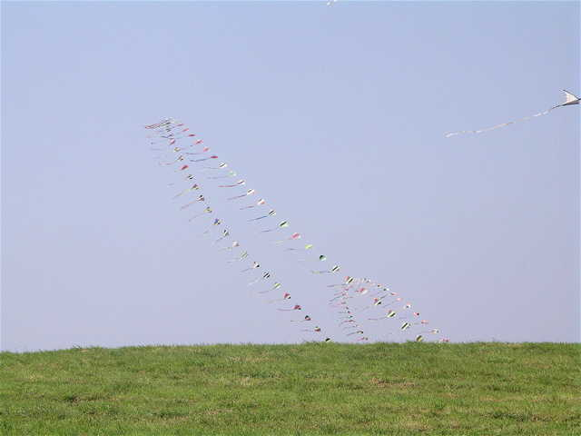
Les Arches du Vent sont donc un nouveau festival organisé conjointement par les clubs de Seine-Maritime : Dieppe, Fécamp, Boos (près de Rouen), et bien monté malgré les bâtons dans les roues de la municipalité d'Etretat...

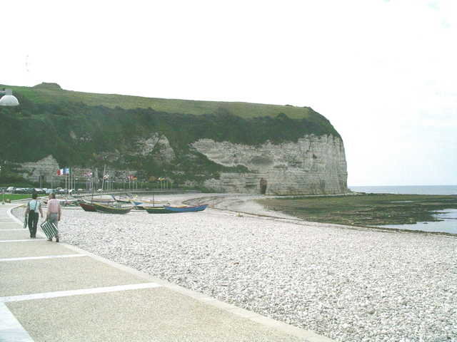
Avant d'en arriver là, un petit détour par Yport, pour vérifier que la toile que j'avais achetée à Fécamp représentait bien ce site...

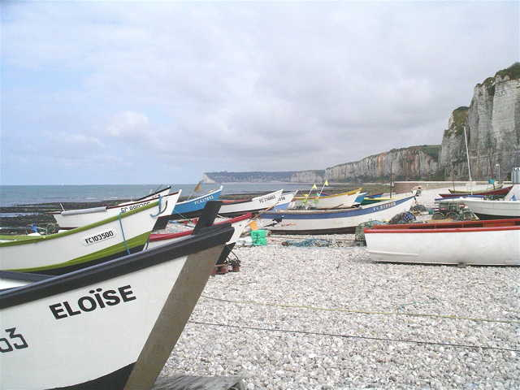
Evidemment, l'artiste a un peu recadré les barques, les falaises et la plage, mais tout est vrai...

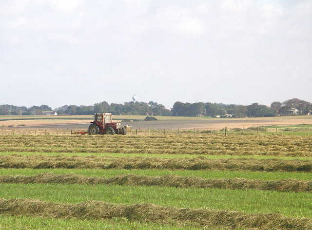
J'arrive vendredi soir, le champ a été fauché lundi et l'herbe est sèche. Le propriétaire est en train de faire les andains, il passera après avec la botteleuse, et demain matin la remorque et le chargeur, tout sera impeccable... Le terrain est vaste et presque plat, pas d'arbres aux environs pour masquer le vent...

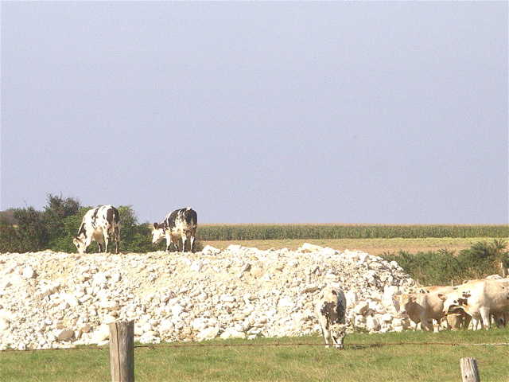
Les vaches du champ d'à côté ne se contentent pas de vivre en haut de la falaise, elles veulent faire de l'alpinisme...

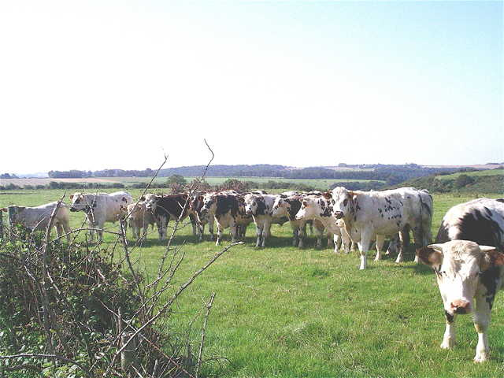
Mais quand on monte les tentes, elles viennent voir, ce n'est pas tous les jours qu'on a du spectacle aussi coloré !

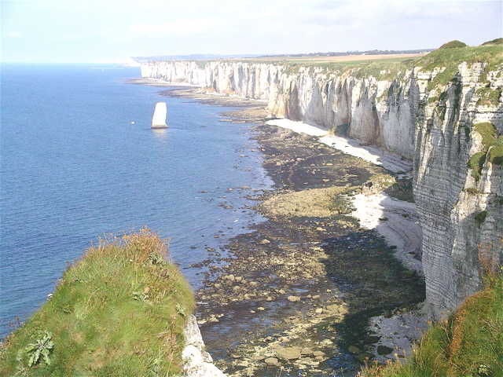
Au bout du champ d'en face, à 100 m, la falaise...

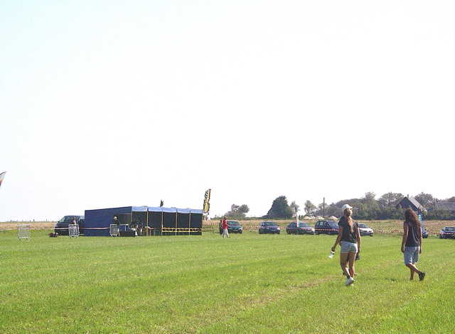
Il va être midi, le barnum est monté, les Pirates sont réveillés (c'est vrai qu'ils ont roulé tard après le boulot...)...

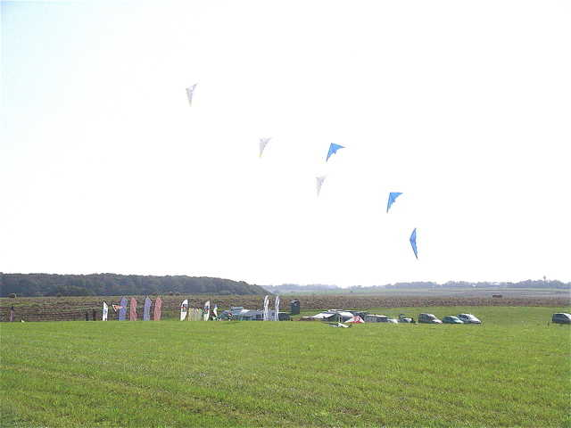
Les teams sont déjà en train de s'entraîner pour la compète qui aura lieu demain.

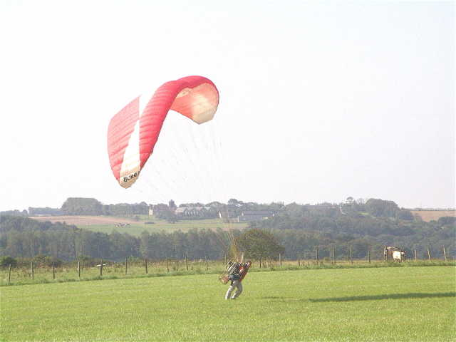
Pas de vent, ce matin, et temps grisâtre. Un petit malin a apporté son moteur avec lui. Mais il est récalcitrant. Quelquefois, la voile se gonfle, quelquefois le moteur tourne, mais jamais les deux en même temps !

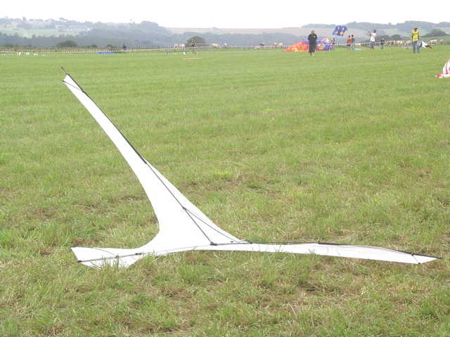
Un oiseau de Ramlal attend son heure. Pourtant, ce splendide animal vole en indoor, sans vent du tout !

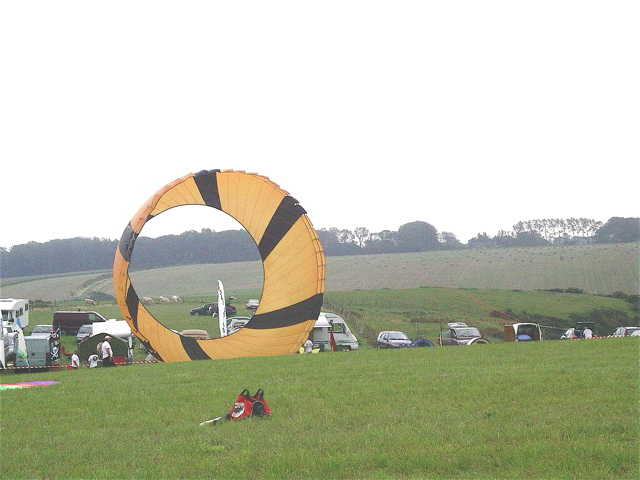
Le vent arrive peu à peu, le grand bol arrive à se gonfler, même si son pseudo-spi noir brillanté se délamine et pèle comme mon nez après un coup de soleil !

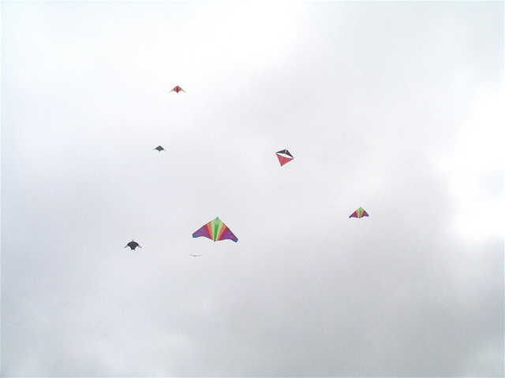
Avec le vent, les cerfs-volants montent, beaucoup de deltas légers d'abord...

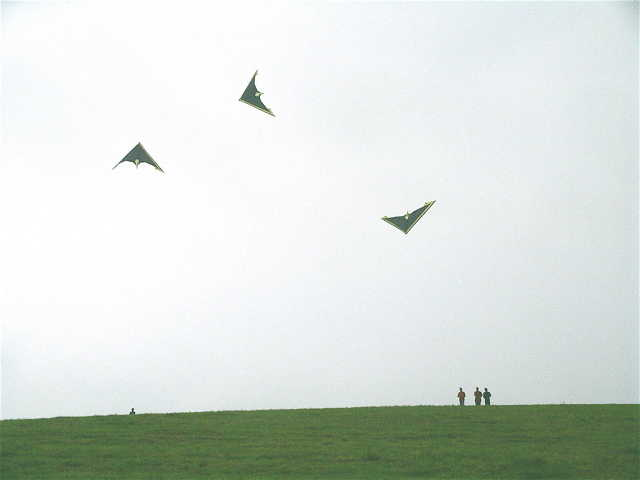
Les pilotables ont commencé depuis longtemps. Les Blackbirds se mettent de la partie... Tiens, tiens, des noir-et-jaune, Yassou serait-il dans le coin ?

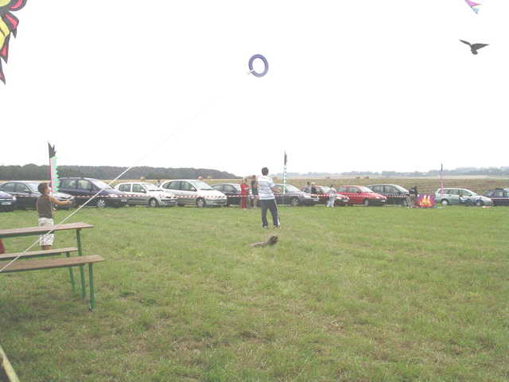
On a beau être dans un coin perdu (route réservée aux résidents !), le public est venu et le parking qui lui est réservé se remplit. Beaucoup d'initiation spontanée pour les jeunes très demandeurs du coin, au monofil, au pilotable, aux Nasas...

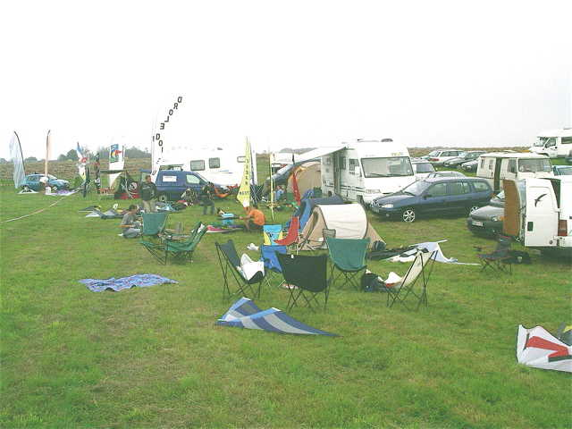
Côté cervolistes, le parc est beaucoup plus en b...azar, la place n'est pas comptée et tout le monde s'étale pour préparer le matériel ou disposer les fauteuils et les glacières...

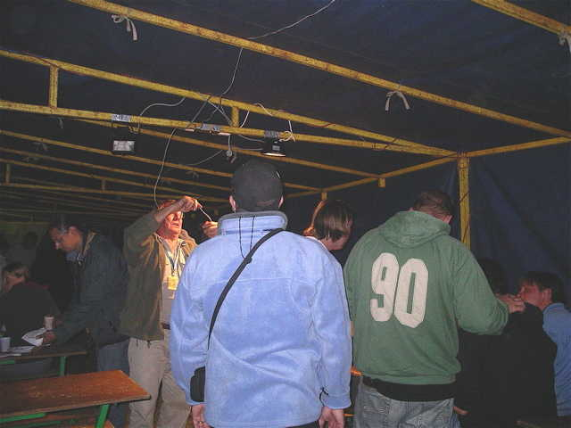
Dîner offert sous le barnum, éclairage par le mini groupe électrogène (presque 200 V !). Un maladroit casse un des projos avec sa tête mais heureusement, Jean-Claude est là et installe sa baladeuse...

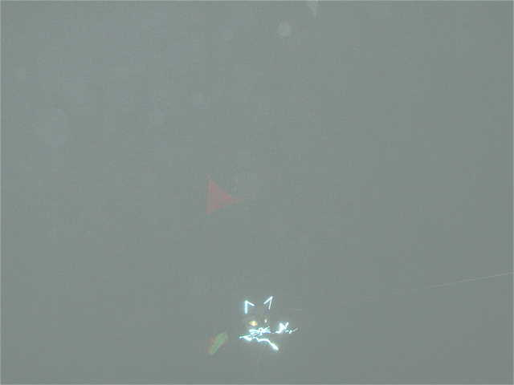
Vol de nuit, lumière minimale, évidemment, mais on s'amuse...

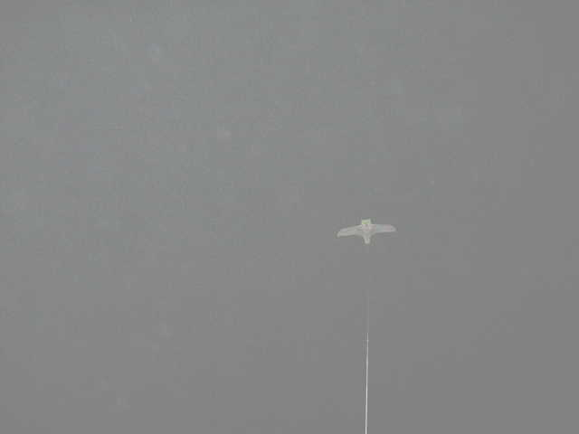
Je fais voler mon Harfang qui n'a pas pris l'air depuis longtemps, le vent est plus que limité pour monter un plus grand oiseau !

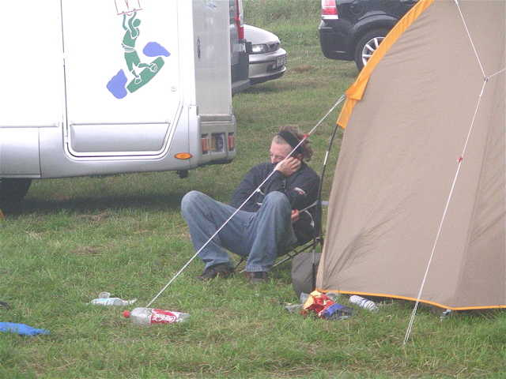
La nuit a été courte pour certains, la sono a marché jusqu'à 4 h du mat', tout le monde n'a pas aimé... Mais le carburant, principalement de la Martinique, n'a apparemment pas manqué...

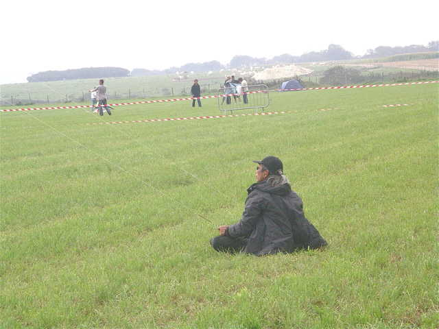
Même Yassou, habituellement au bout des lignes de 8 h du matin à tard le soir, est très Zen, ce matin...

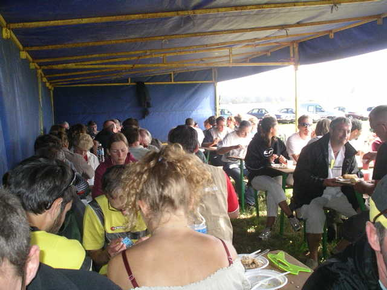
Le vent reste faiblard et la brume très présente. Au déjeuner, les hommes supportent bien un petit anorak !

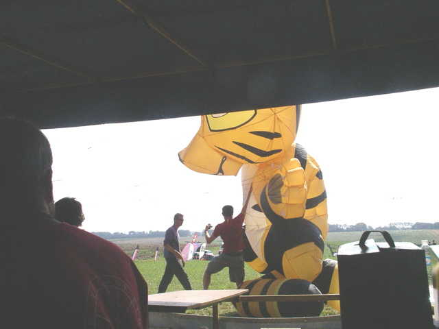
Le propriétaire du tigre se lance dans un corps-à-corps violent pour le démêler avant son envol...

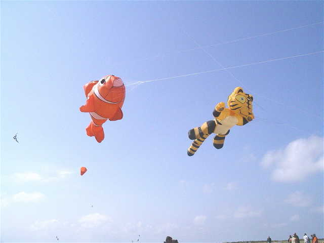
Et voilà, le tigre plane majestueusement en position de chuteur et en compagnie d'un beau Nemo énorme...

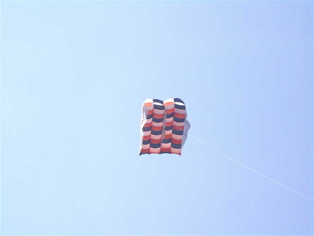
Les porteurs sont souvent des flow-forms banals unicolores, mais celui-là a fait un gros effort de design et de couture !

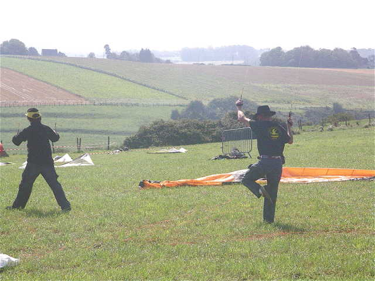
Les teams commencent à s'échauffer pour la compète, mais pour rejoindre l'emplacement, c'est plein de lignes par terre !

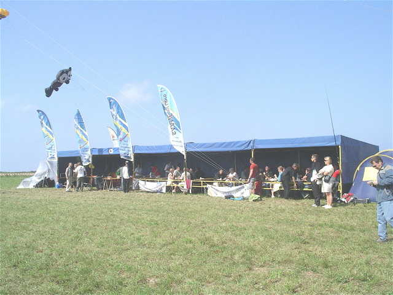
Le déjeuner se termine, le ciel est bleu, le vent s'est levé, l'après-midi va être parfait à tous points de vue !

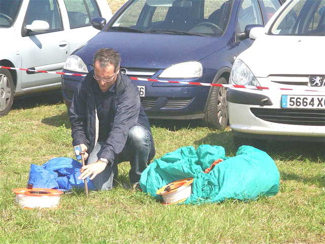
Sylvain plante une barre à mine, je sens comme une odeur de poisson...

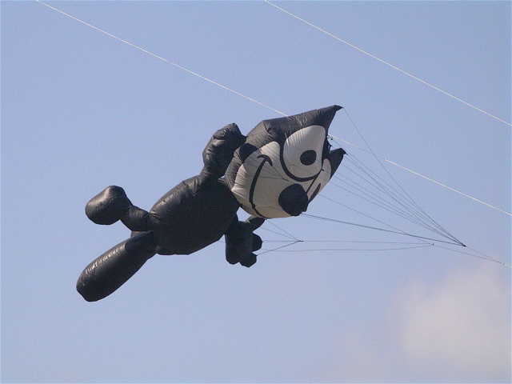
Un beau Félix Le Chat nous sourit depuis là-haut...

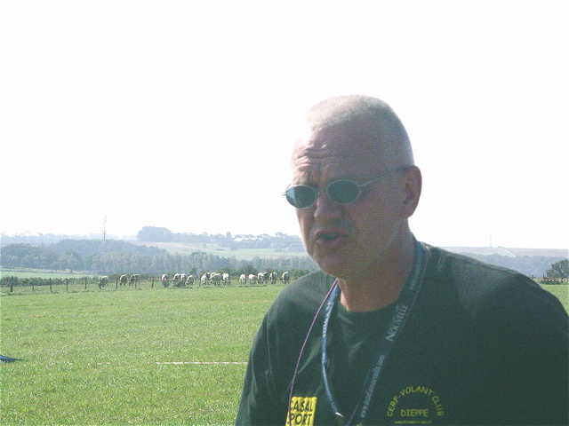
Eric est partout sur le terrain, il dirige les opérations et il fait aussi le commentaire...

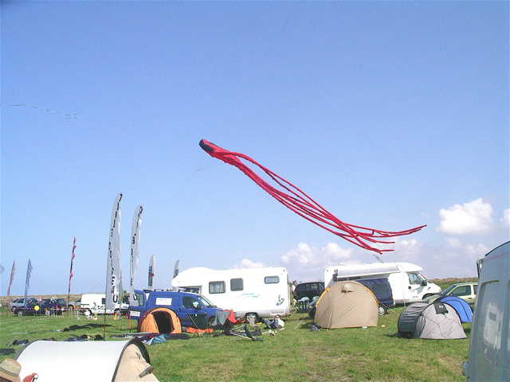
Le vent est maintenant assez fort pour porter les pieuvres. En voilà une rouge, celle de Jean-Claude !

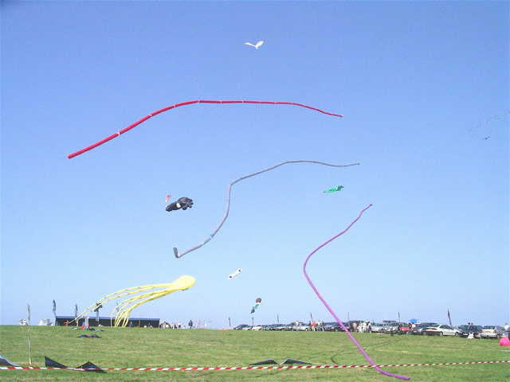
Trois magnifiques queues tubulaires sinuent dans le ciel, en compagnie d'une très grande pieuvre jaune. A gauche, c'est le terrain de la compète des pilotables qui se déroule cet après-midi, ce matin le vent était hors normes...

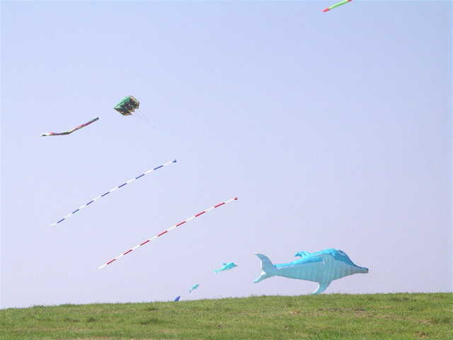
Sous ce parafoil plat et coloré, un gros poisson bleu et son petit frère, et des queues...

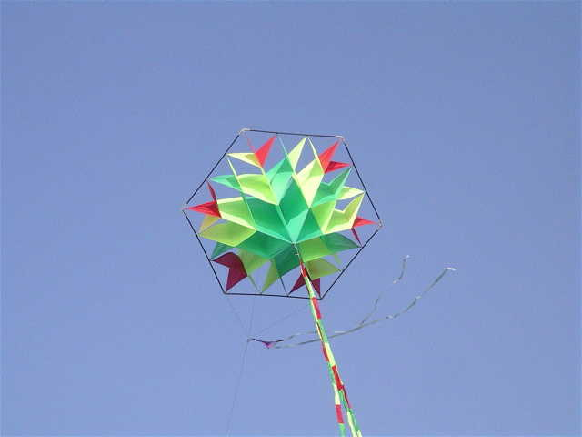
Pour le flocon, c'est encore un peu juste, mais dans quelques minutes, il va monter...

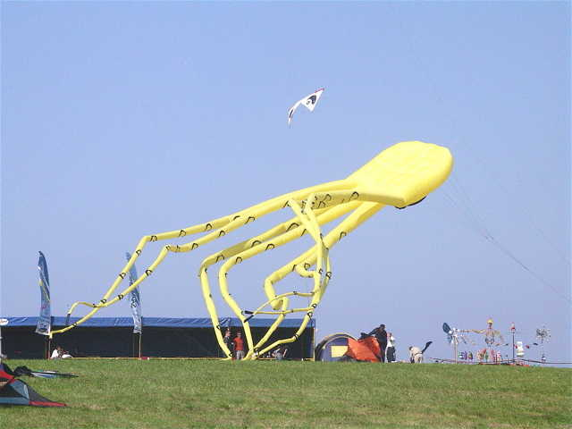
Une énorme pieuvre jaune se déploie. Celle-là pourrait emmener tout le barnum.

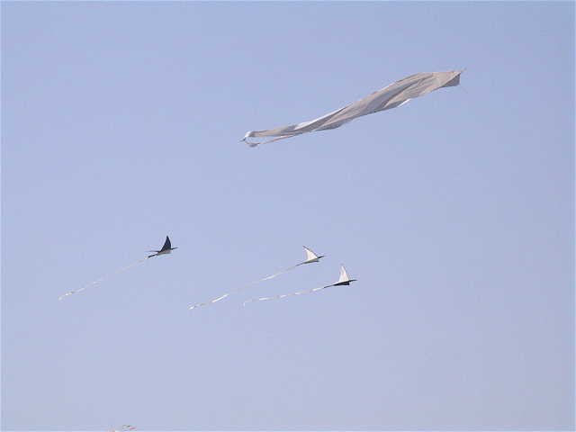
Un ensemble de beaux oiseaux dans les blanc-gris-noir vole de concert, ils sont montés jusqu'à huit !

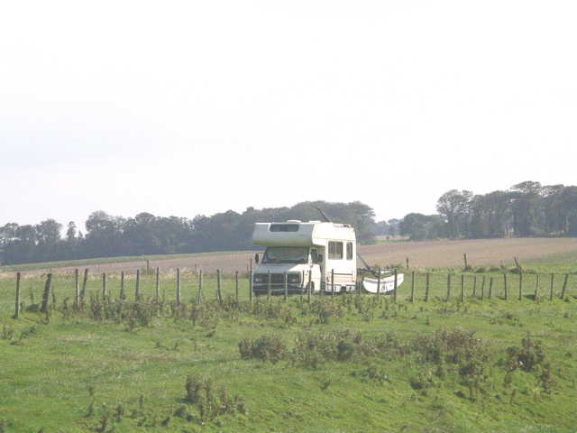
Dans le fond du parking, un camping-car avec un catamaran Hobbycat... Normal, nous sommes à 100 m de la mer. D'accord, mais léger détail, il y a la falaise à sauter...

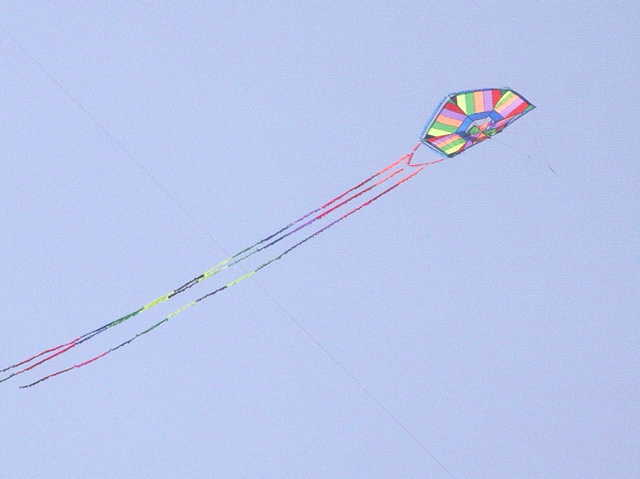
Dans le ciel, ce beau cerf-volant genre guatémaltèque avec toutes ses petites franges, mais cintré comme un rokkaku. De plus, il y a au milieu une partie tournante...

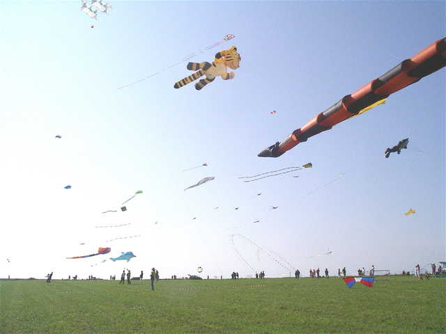
Finalement, il fait trop beau, tout le monde s'est décidé et il y a plein de toile en l'air, je parle des monofils !

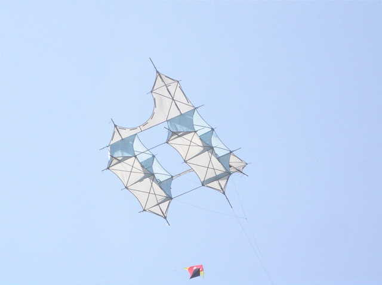
On retrouve par exemple ce beau Cody très graphique avec sa nuance très claire, les barres qui dépassent et les diagonales marquées...

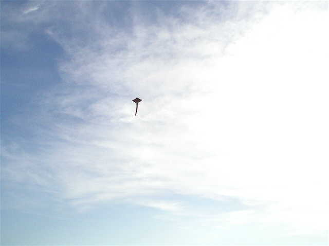
Sylvain ne laisse pas passer l'occasion, d'autant que le ciel se libère vers le soir. Il monte sa raie sans même de porteur jusqu'à des hauteurs inavouables...

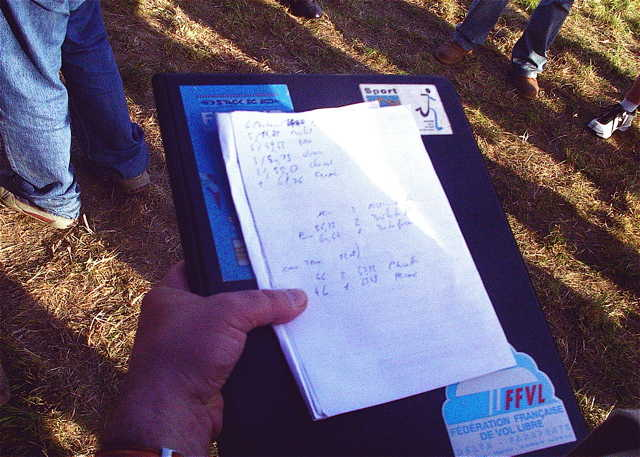
C'est l'heure de la remise des prix. Je publie le palmarès, ceux qui connaissent arriveront bien à lire... Si j'ai bien suivi, ce sont en fait des qualifications pour le championnat national.

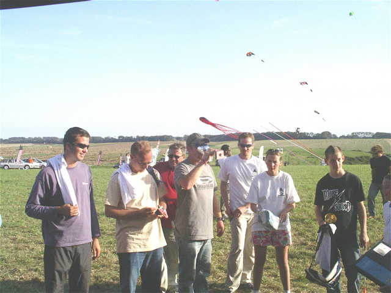
Les concurrents reçoivent leurs coupes et se congratulent...

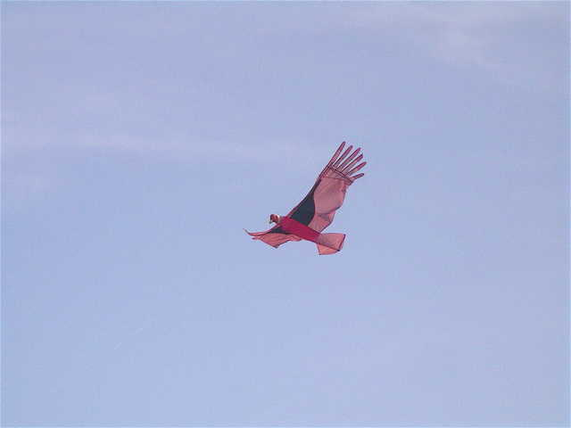
Pendant ce temps, mon Condor veille, les modifs-réparations faites ont l'air efficaces... Mais des spectateurs me soulignent qu'ils préféraient l'oiseau blanc d'hier... Bon, je ne vais pas faire voler toujours le même !

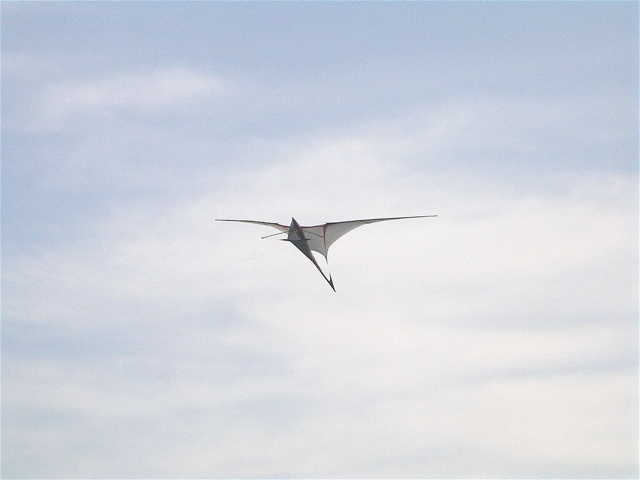
Un Furax, grand oiseau-avion de Ramlal a pris son essor, il retombera longtemps après quand le vent faiblira !

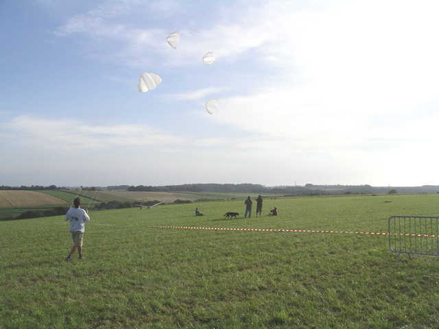
Le soleil baisse, les Pirates présentent encore leur ballet de Nasa-Wings, dans un vent mollissant. Ils feront aussi un peu d'initiation...

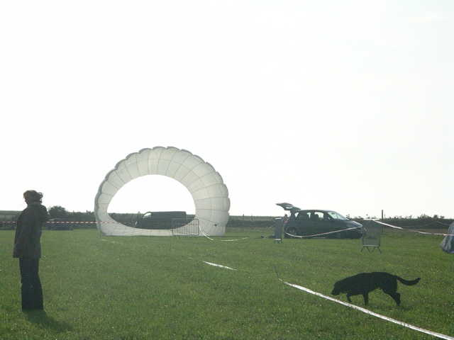
Un grand bol finit lui aussi par s'écrouler. Il paraît qu'il a été taillé dans une Montgolfière vieillissante...

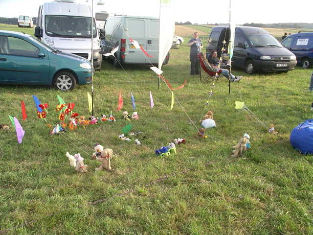
Thierry me montre son JdV à lui, où figurent beaucoup de cervolistes. Ca y est je suis immortalisé avec mon oiseau...

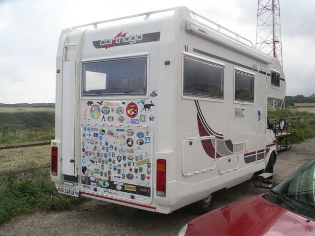
Bon, je vais rentrer lundi matin. Je rencontre un camping-car suisse qui a voyagé beaucoup plus et plus loin que moi, apparemment...

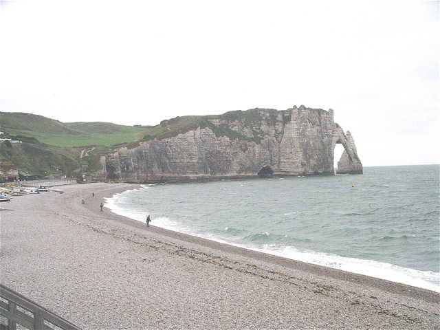
Etretat ne le mérite pas, mais je ne peux passer dans le coin lundi matin sans un coup d'oeil sur la Manneporte et l'Aiguille célébrée par Arsène Lupin...
Les Arches du Vent : Un nouveau festival, à Bénouville, pas mal axé sur le pilotable, mais il y a beaucoup de place et de monofilistes. On peut faire beaucoup de visites aux environs, les falaises, les chocolats au fromage de chèvre, etc... Et l'organisation multi-club a marché comme sur des roulettes bien rodées malgré les traquenards, bravo et merci, à l'an prochain, j'espère !